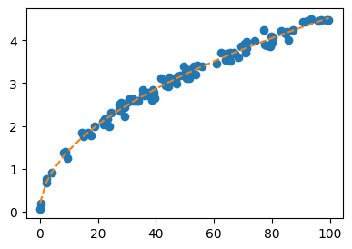
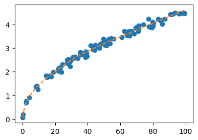
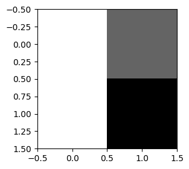
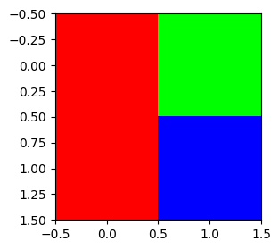
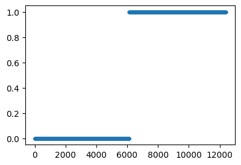

# {{<video https://youtu.be/playlist?list=PLQqh36zP38-xB7p8AzMKUrEfxL0Vte-pY&si=BwVUNxT8IIPrjIcA>}}07wk: 신경망의 표현, 시벤코 정리

1. 강의영상
2. Imports
import torch
import matplotlib.pyplot as plt
import pandas as pdplt.rcParams['figure.figsize'] = (4.5,3.0)3. 신경망의 표현
신경망의 표현: \({\bf X} \to \hat{\bf y}\) 로 가는 과정을 그림으로 표현
A. 로지스틱
\[\underset{(n,1)}{\bf X} \overset{l_1}{\to} \underset{(n,1)}{\boldsymbol u^{(1)}} \overset{sig}{\to} \underset{(n,1)}{\boldsymbol v^{(1)}} =\underset{(n,1)}{\hat{\bf y}}\]
- 모든 observation과 가중치를 명시한 버전
(표현1)

- 단점: 똑같은 그림의 반복이 너무 많음
- observation 반복을 생략한 버전들
(표현2) 모든 \(i\)에 대하여 아래의 그림을 반복한다고 하면 (표현1)과 같다.

(표현3) 그런데 (표현2)에서 아래와 같이 \(x_i\), \(y_i\) 대신에 간단히 \(x\), \(y\)로 쓰는 경우도 많음

- 1을 생략한 버전들
(표현4) bais=False 대신에 bias=True를 주면 1을 생략할 수 있음

(표현4의 수정) \(\hat{w}_1\)대신에 \(\hat{w}\)를 쓰는 것이 더 자연스러움

(표현5) 선형변환의 결과는 아래와 같이 \(u\)로 표현하기도 한다.

다이어그램은 그리는 사람의 취향에 따라 그리는 방법이 조금씩 다릅니다. 즉 교재마다 달라요.
B. 스펙의역설
\[\underset{(n,1)}{\bf X} \overset{l_1}{\to} \underset{(n,2)}{\boldsymbol u^{(1)}} \overset{relu}{\to} \underset{(n,2)}{\boldsymbol v^{(1)}} \overset{l_2}{\to} \underset{(n,1)}{\boldsymbol u^{(2)}} \overset{sig}{\to} \underset{(n,1)}{\boldsymbol v^{(2)}} =\underset{(n,1)}{\hat{\bf y}}\]
참고: 코드로 표현
torch.nn.Sequential(
torch.nn.Linear(in_features=1,out_features=2),
torch.nn.ReLU(),
torch.nn.Linear(in_features=2,out_features=1),
torch.nn.Sigmoid()
)- 이해를 위해서 예젠에 다루었던 아래의 상황을 고려하자.

(강의노트의 표현)

(좀 더 일반화된 표현) 상황을 일반화하면 아래와 같다.

* Layer의 개념: \({\bf X}\)에서 \(\hat{\boldsymbol y}\)로 가는 과정은 “선형변환+비선형변환”이 반복되는 구조이다. “선형변환+비선형변환”을 하나의 세트로 보면 아래와 같이 표현할 수 있다.
- \(\underset{(n,1)}{\bf X} \overset{l_1}{\to} \left( \underset{(n,2)}{\boldsymbol u^{(1)}} \overset{relu}{\to} \underset{(n,2)}{\boldsymbol v^{(1)}} \right) \overset{l_2}{\to} \left(\underset{(n,1)}{\boldsymbol u^{(2)}} \overset{sig}{\to} \underset{(n,1)}{\boldsymbol v^{(2)}}\right), \quad \underset{(n,1)}{\boldsymbol v^{(2)}}=\underset{(n,1)}{net({\bf X})}=\underset{(n,1)}{\hat{\bf y}}\)
이것을 다이어그램으로 표현한다면 아래와 같다.
(선형+비선형을 하나의 Layer로 묶은 표현)

C. 레이어를 세는방법
- Layer를 세는 방법
- 제 방식: 학습가능한 파라메터가 몇층으로 있는지… <– 이것만 기억하세여
- 일부 교재 설명: 입력층은 계산하지 않음, activation layer는 계산하지 않음. <– 무시하세요.. 이러면 헷갈립니다..
- Hidden Layer의 수를 세는 방법
- 제 방식:
Hidden Layer의 수 = Layer의 수 -1<– 이걸 기억하세여..
- 일부 교재 설명:
Layer의 수 = Hidden Layer의 수 + 출력층의 수<– 기억하지 마세여
- 몇가지 예시들
# 예시1 -- 2층 (히든레이어는 1층)
torch.nn.Sequential(
torch.nn.Linear(??,??), ## <-- 학습해야할 가중치가 있는 층
torch.nn.ReLU(),
torch.nn.Linear(??,??), ## <-- 학습해야할 가중치가 있는 층
)## 예시2 -- 2층 (히든레이어는 1층)
torch.nn.Sequential(
torch.nn.Linear(??,??), ## <-- 학습해야할 가중치가 있는 층
torch.nn.ReLU(),
torch.nn.Linear(??,??), ## <-- 학습해야할 가중치가 있는 층
torch.nn.Sigmoid(),
)## 예시3 -- 1층 (히든레이어는 없음!!)
torch.nn.Sequential(
torch.nn.Linear(??,??), ## <-- 학습해야할 가중치가 있는 층
) ## 예시4 -- 1층 (히든레이어는 없음!!)
torch.nn.Sequential(
torch.nn.Linear(??,??), ## <-- 학습해야할 가중치가 있는 층
torch.nn.Sigmoid()
) ## 예시5 -- 3층 (히든레이어는 2층)
torch.nn.Sequential(
torch.nn.Linear(??,??), ## <-- 학습해야할 가중치가 있는 층
torch.nn.Sigmoid()
torch.nn.Linear(??,??), ## <-- 학습해야할 가중치가 있는 층
torch.nn.Sigmoid()
torch.nn.Linear(??,??), ## <-- 학습해야할 가중치가 있는 층
) ## 예시6 -- 3층 (히든레이어는 2층)
torch.nn.Sequential(
torch.nn.Linear(??,??), ## <-- 학습해야할 가중치가 있는 층
torch.nn.ReLU()
torch.nn.Dropout(??)
torch.nn.Linear(??,??), ## <-- 학습해야할 가중치가 있는 층
torch.nn.ReLU()
torch.nn.Dropout(??)
torch.nn.Linear(??,??), ## <-- 학습해야할 가중치가 있는 층
torch.nn.Sigmoid()
) - 참고1: 문헌에 따라서 레이어를 세는 개념이 제가 설명한 방식과 다른경우가 있습니다. 제가 설명한 방식보다 1씩 더해서 셉니다. 즉 아래의 경우 레이어를 3개로 카운트합니다.
## 예시1 -- 문헌에 따라 3층으로 세는 경우가 있음 (히든레이어는 1층)
torch.nn.Sequential(
torch.nn.Linear(??,??), ## <-- 학습해야할 가중치가 있는 층
torch.nn.ReLU(),
torch.nn.Linear(??,??), ## <-- 학습해야할 가중치가 있는 층
torch.nn.Sigmoid()
)예를 들어 여기에서는 위의 경우 레이어는 3개라고 설명하고 있습니다. 이러한 카운팅은 “무시”하세요. 제가 설명한 방식이 맞아요. 이 링크 잘못(?) 나와있는 이유는 아래와 같습니다.
- 진짜 예전에 MLP를 소개할 초창기에서는 위의 경우 Layer를 3개로 셌음. (Rosenblatt et al. 1962)
- 그런데 시간이 지나면서 어느순간 그렇게 안세기 시작함..
Rosenblatt, Frank et al. 1962. Principles of Neurodynamics: Perceptrons and the Theory of Brain Mechanisms. Vol. 55. Spartan books Washington, DC.
참고로 히든레이어의 수는 예전방식이나 지금방식이나 동일하게 카운트하므로 히든레이어만 세면 혼돈이 없습니다.
- node의 개념: \(u\to v\)로 가는 쌍을 간단히 노드라는 개념을 이용하여 나타낼 수 있음.
(노드의 개념이 포함된 그림)

여기에서 node의 숫자 = feature의 숫자와 같이 이해할 수 있다. 즉 아래와 같이 이해할 수 있다.
(“number of nodes = number of features”로 이해한 그림)

다이어그램의 표현방식은 교재마다 달라서 모든 예시를 달달 외울 필요는 없습니다. 다만 임의의 다이어그램을 보고 대응하는 네트워크를 pytorch로 구현하는 능력은 매우 중요합니다.
4. 시벤코정리
# Universal Approximation Thm (Cybenko 1989)
Cybenko, George. 1989. “Approximation by Superpositions of a Sigmoidal Function.” Mathematics of Control, Signals and Systems 2 (4): 303–14.
하나의 은닉층을 가지는 아래와 같은 꼴의 네트워크 \(net: {\bf X}_{n \times p} \to {\bf y}_{n\times q}\)는
net = torch.nn.Sequential(
torch.nn.Linear(p,???),
torch.nn.Sigmoid(),
torch.nn.Linear(???,q)
)모든 보렐 가측함수 (Borel measurable function)
\[f: {\bf X}_{n \times p} \to {\bf y}_{n\times q}\]
를 원하는 정확도로 “근사”시킬 수 있다. 쉽게 말하면 \({\bf X} \to {\bf y}\) 인 어떠한 복잡한 규칙라도 하나의 은닉층을 가진 신경망이 원하는 정확도로 근사시킨다는 의미이다. 예를들면 아래와 같은 문제를 해결할 수 있다.
- \({\bf X}_{n\times 2}\)는 토익점수, GPA 이고 \({\bf y}_{n\times 1}\)는 취업여부일 경우 \({\bf X} \to {\bf y}\)인 규칙을 신경망은 항상 찾을 수 있다.
- \({\bf X}_{n \times p}\)는 주택이미지, 지역정보, 주택면적, 주택에 대한 설명 이고 \({\bf y}_{n\times 1}\)는 주택가격일 경우 \({\bf X} \to {\bf y}\)인 규칙을 신경망은 항상 찾을 수 있다.
즉 하나의 은닉층을 가진 신경망의 표현력은 거의 무한대라 볼 수 있다.
#
보렐가측함수에 대한 정의는 측도론에 대한 이해가 있어야 가능함. 측도론에 대한 내용이 궁금하다면 https://guebin.github.io/SS2024/ 을 공부해보세요
5. XOR
- 아래의 자료를 적합시키는 네트워크를 설계하여 보자.
| \({\bf x}_1\) | \({\bf x}_2\) | \({\bf y}\) |
|---|---|---|
| 0 | 0 | 0 |
| 0 | 1 | 1 |
| 1 | 0 | 1 |
| 1 | 1 | 0 |
매우 유명한 문제임
# 시도1 – 어? 퀴즈11이랑 비슷하네?? 하고 적합하는경우
X = torch.tensor(
[[1,0,0],[1,0,1],[1,1,0],[1,1,1]]
).float()
Y = torch.tensor([[0],[1],[1],[0]]).float()
sig = torch.nn.Sigmoid()
What = torch.randn((3,1),requires_grad=True)
loss_fn = torch.nn.BCELoss()
#---#
for epoch in range(10000):
# step1
Yhat = sig(X@What)
# step2
loss = loss_fn(Yhat,Y)
# step3
loss.backward()
# step4
What.data = What.data - 0.1*What.grad
What.grad = Nonesig(X@What) # 절대 못맞춤tensor([[0.5000],
[0.5000],
[0.5000],
[0.5000]], grad_fn=<SigmoidBackward0>)- 이 규칙을 학습하기 위해서는 네트워크의 표현력이 부족함.
\[\hat{y}_i = \text{sig}(\hat{w}_0 + \hat{w}_1 x_{i1} + \hat{w}_2 x_{i2})\]
왜?
- 큰 \(\hat{w}_0\)의 값은 전체적으로 \(\hat{y}_i\)의 값이 1임을 의미함..
- 큰 \(\hat{w}_1\)의 값은 \(x_{i1}\)의 값이 커질수록 \(\hat{y}_i\)의 값이 커짐을 의미함
- 큰 \(\hat{w}_2\)의 값은 \(x_{i2}\)의 값이 커질수록 \(\hat{y}_i\)의 값이 커짐을 의미함.
그런데 우리의 데이터는 \(\hat{w}_0\)의 값을 크게할지, \(\hat{w}_1\)을 크게할지, \(\hat{w}_2\)의 값을 크게할지 모두 애매하다..
- 우리는 매우 불리한 상황임. 데이터가 아래와 같이 생겼다면 맞췄을 것임
(예시1)
| \({\bf x}_1\) | \({\bf x}_2\) | \({\bf y}\) |
|---|---|---|
| 0 | 0 | 0 |
| 0 | 1 | 1 |
| 1 | 0 | 1 |
| 1 | 1 | 1 |
(예시2)
| \({\bf x}_1\) | \({\bf x}_2\) | \({\bf y}\) |
|---|---|---|
| 0 | 0 | 1 |
| 0 | 1 | 1 |
| 1 | 0 | 1 |
| 1 | 1 | 0 |
하다 못해 아래와 같은 상황이라도 맞췃을 것임
(예시3)
| \({\bf x}_1\) | \({\bf x}_2\) | \({\bf y}\) |
|---|---|---|
| 0 | 0 | 0 |
| 0 | 0 | 1 |
| 0 | 1 | 0 |
| 0 | 1 | 0 |
| 1 | 0 | 1 |
| 1 | 0 | 1 |
| 1 | 1 | 0 |
| 1 | 1 | 1 |
# 시도2
- X1을 학점, X2를 토익점수, Y를 취업여부라고 상상한다면??
- 데이터가 말하는건 X1과 X2가 모두 큰데 오히려 취업이 안되는 상황
- 시도1이 실패한건 표현력이 부족했기 때문임
X = torch.tensor(
[[0,0],[0,1],[1,0],[1,1]]
).float()
Y = torch.tensor([[0],[1],[1],[0]]).float()
net = torch.nn.Sequential(
torch.nn.Linear(2,2),
torch.nn.ReLU(),
torch.nn.Linear(2,1),
torch.nn.Sigmoid()
)
loss_fn = torch.nn.BCELoss()
optimizer = torch.optim.Adam(net.parameters())
#---#for epoch in range(1000):
# step1
Yhat = net(X)
# step2
loss = loss_fn(Yhat,Y)
# step3
loss.backward()
# step4
optimizer.step()
optimizer.zero_grad()net(X).data,Y(tensor([[0.5066],
[0.4974],
[0.5037],
[0.4945]]),
tensor([[0.],
[1.],
[1.],
[0.]]))# 시도3 – 좀더 화끈하게 (시벤코정리 고마웡)
X = torch.tensor(
[[0,0],[0,1],[1,0],[1,1]]
).float()
Y = torch.tensor([[0],[1],[1],[0]]).float()
net = torch.nn.Sequential(
torch.nn.Linear(2,128),
torch.nn.ReLU(),
torch.nn.Linear(128,1),
torch.nn.Sigmoid()
)
loss_fn = torch.nn.BCELoss()
optimizer = torch.optim.Adam(net.parameters())
#---#
for epoch in range(1000):
# step1
Yhat = net(X)
# step2
loss = loss_fn(Yhat,Y)
# step3
loss.backward()
# step4
optimizer.step()
optimizer.zero_grad()net(X).data,Y(tensor([[0.0076],
[0.9931],
[0.9932],
[0.0067]]),
tensor([[0.],
[1.],
[1.],
[0.]]))5. 전통적 모델링 vs 딥러닝식 모델링
A. 자유낙하
- 박혜원씨는 물체가 떨어진 높이와 물체가 지면에 떨어지는 시간이 어떠한 관계가 있다는 것을 알았다. 구체적으로
높은곳에서 떨어진 물체일수록 더 오랜시간 낙하함.
와 같은 관계가 있다는 사실을 알았다.
height = [
0.1867, 0.2848, 2.1355, 2.2167, 4.1491, 8.1850, 8.7433, 9.3315,
14.5883, 14.9888, 16.5491, 17.7069, 18.8424, 21.8355, 21.8808, 22.0881,
22.3026, 22.5745, 23.1269, 23.9332, 24.6669, 27.2351, 27.4392, 27.6720,
28.1114, 29.1729, 29.2594, 30.6107, 30.7007, 31.9626, 32.4375, 33.5212,
33.8969, 35.3980, 35.4875, 36.0210, 36.7319, 37.2270, 37.7999, 37.9642,
38.5938, 39.0878, 39.3041, 39.5966, 41.6302, 43.3391, 43.4646, 43.4779,
44.2029, 44.5496, 45.1828, 47.0924, 47.5687, 48.3803, 49.7113, 49.9602,
50.4318, 50.5070, 50.5837, 51.3863, 51.3869, 52.9359, 53.6882, 54.3114,
56.0177, 60.8485, 62.5412, 64.0429, 64.4687, 65.6608, 65.7108, 67.0237,
67.1796, 68.4925, 69.4765, 70.7629, 71.0061, 71.1954, 71.3918, 74.0178,
77.3426, 77.5536, 78.2571, 79.4971, 79.6985, 80.0267, 80.4075, 83.2470,
84.7562, 85.1897, 85.7150, 87.1619, 90.8313, 91.7407, 92.3853, 93.5739,
96.1382, 96.9394, 99.0074, 99.6843
]fall_time = [
0.0612, 0.1882, 0.7556, 0.6769, 0.9018, 1.3658, 1.4047, 1.2397, 1.8347,
1.7617, 1.8318, 1.7867, 1.9896, 2.0901, 2.0347, 2.0704, 2.1524, 2.1035,
2.1703, 1.9836, 2.3152, 2.3836, 2.4949, 2.3455, 2.5333, 2.2178, 2.4416,
2.5534, 2.6200, 2.6332, 2.5955, 2.5901, 2.5771, 2.8369, 2.7254, 2.7138,
2.7489, 2.7782, 2.7200, 2.7547, 2.6128, 2.8415, 2.7808, 2.6488, 3.1167,
3.0383, 2.9401, 3.0126, 2.9233, 3.1341, 3.0755, 2.9978, 3.1484, 3.1864,
3.3868, 3.2313, 3.1209, 3.1922, 3.2119, 3.1101, 3.3041, 3.3947, 3.1918,
3.4043, 3.3920, 3.4561, 3.7133, 3.5496, 3.6964, 3.7211, 3.5275, 3.7168,
3.6911, 3.6120, 3.8650, 3.9209, 3.7195, 3.9642, 3.8094, 3.9951, 4.2356,
3.9031, 3.8805, 3.8605, 4.1031, 3.9385, 4.0645, 4.2283, 4.1582, 4.1910,
4.0181, 4.2427, 4.4362, 4.4256, 4.4554, 4.4870, 4.4486, 4.4710, 4.4710,
4.4741
]plt.plot(height,fall_time,'o')
만약에 높이 49m에서 떨어뜨리면, 몇초만에 떨어질까?
B. 전통적 모델링
- 그래프를 보면 높이가 높을 수록 낙하시간도 길어지는 경향이 보임.
- 다만 동일한 높이라 하더라도 낙하시간이 조금씩 차이날 수 있어보임
- 이는 사람이 시간측정을 수동으로 하며 발생하는 실험오차 때문인것 같음
- 아무튼 오차에도 불구하고 height와 fall_time은 일정한 규칙(=오차랑 관련없는 underlying structure)이 존재하는 듯 하다.
- 자문요청: 물리학과 교수님께 자문을 요청한 결과
\[\text{자유낙하시간} \propto \sqrt{\text{높이}}\]
임을 알 수 있었다.
- 이를 근거로 아래와 같은 모형을 설계하였다.
\[t_i = \beta_1 \sqrt{h}_i + \epsilon_i, \quad \epsilon_i \sim N(0,??)\]
- 적합: \(y_i = t_i\)로, \(x_i=\sqrt{h}_i\)로 해석하자.
X = torch.sqrt(torch.tensor(height)).reshape(-1,1)
Y = torch.tensor(fall_time).reshape(-1,1)plt.plot(X,Y,'o') # 적당한 변환을 샥샥 해주니까... 회귀네?
torch.manual_seed(43052)
net = torch.nn.Sequential(
torch.nn.Linear(1,1,bias=False)
)
# 이건 사실 net = torch.nn.Linear(1,1,bais=False) 와 같은 효과임
loss_fn = torch.nn.MSELoss()
optimizer = torch.optim.Adam(net.parameters())
#---#
for epoch in range(100):
## step1
Yhat = net(X)
## step2
loss = loss_fn(Yhat,Y)
## step3
loss.backward()
## step4
optimizer.step()
optimizer.zero_grad()for epoch in range(100):
## step1
Yhat = net(X)
## step2
loss = loss_fn(Yhat,Y)
## step3
loss.backward()
## step4
optimizer.step()
optimizer.zero_grad()#plt.plot(height,fall_time,'o')
plt.plot(X**2,Y,'o')
plt.plot(X**2,net(X).data,'--')
- 예측: 만약 높이 50m에서 떨어뜨리면 몇초만에 떨어질까?
list(net.parameters())[Parameter containing:
tensor([[0.4530]], requires_grad=True)]Xnew = torch.sqrt(torch.tensor([[50]]))
net(Xnew).datatensor([[3.2034]])C. 딥러닝식 모델링
- 참모델? 관심없음
- 그냥 딥러닝식 무지성적합 (underlying structure가 뭔지 알게 뭐야)
X = torch.tensor(height).reshape(-1,1)
Y = torch.tensor(fall_time).reshape(-1,1)
# 천하무적 네트워크
torch.manual_seed(43052)
net = torch.nn.Sequential(
torch.nn.Linear(1,512),
torch.nn.ReLU(),
torch.nn.Linear(512,1)
)
loss_fn = torch.nn.MSELoss()
optimizer = torch.optim.Adam(net.parameters())for epoch in range(100):
# step1
Yhat = net(X)
# step2
loss = loss_fn(Yhat,Y)
# step3
loss.backward()
# step4
optimizer.step()
optimizer.zero_grad()plt.plot(X,Y,'o')
plt.plot(X,net(X).data,'--')
Xnew = torch.tensor([[50.00]])
net(Xnew).datatensor([[3.1976]])- 쓸만한데?
- true가 아닐지라도 쓸만함.
“All models are wrong (but some are useful)”, George Box
ref: https://en.wikipedia.org/wiki/All_models_are_wrong
- 너무나 유명한 그림 (ref: https://www.ncbi.nlm.nih.gov/books/NBK543533/)

6. MNIST
A. 예비학습 – plt.imshow()
- plt.imshow(..., cmap="gray") 에서 ...이 shape이 (??,??)이면 흑백이미지를 출력
img = torch.tensor([[255,100],
[255,0]])
plt.imshow(img,cmap="gray")<matplotlib.image.AxesImage at 0x7aa83a5fbd60>
- plt.imshow(...) 에서 ...의 shape이 (??,??,3)이면 칼라이미지를 출력
r = torch.tensor([[255,0],
[255,0]])
g = torch.tensor([[0,255],
[0,0]])
b = torch.tensor([[0,0],
[0,255]])
img = torch.stack([r,g,b],axis=-1)
plt.imshow(img)<matplotlib.image.AxesImage at 0x7aa839f7efd0>
- plt.imshow(...) 에서 ...의 자료형이 int인지 float인지에 따라서 인식이 다름
r = torch.tensor([[1,0],
[1,0]])
g = torch.tensor([[0,1],
[0,0]])
b = torch.tensor([[0,0],
[0,1]])
img = torch.stack([r,g,b],axis=-1)
plt.imshow(img)<matplotlib.image.AxesImage at 0x7aa839dec370>
r = torch.tensor([[255,0],
[255,0]])/255
g = torch.tensor([[0,255],
[0,0]])/255
b = torch.tensor([[0,0],
[0,255]])/255
img = torch.stack([r,g,b],axis=-1)
plt.imshow(img)<matplotlib.image.AxesImage at 0x7aa839cc7a60>
B. 데이터
- 데이터 정리코드
train_dataset = torchvision.datasets.MNIST(root='./data', train=True, download=True)
to_tensor = torchvision.transforms.ToTensor()
X3 = torch.stack([to_tensor(Xi) for Xi, yi in train_dataset if yi==3])
X7 = torch.stack([to_tensor(Xi) for Xi, yi in train_dataset if yi==7])
X = torch.concat([X3,X7],axis=0)
y = torch.tensor([0.0]*len(X3) + [1.0]*len(X7))plt.plot(y,'.')[<matplotlib.lines.Line2D at 0x70d5a0147eb0>]
- 우리는 \({\bf X}: (n,1,28,28)\) 에서 \({\bf y}: (n,1)\)으로 가는 맵핑을 배우고 싶음. \(\to\) 이런건 배운적이 없는데?.. \(\to\) 그렇다면 \({\bf X}:(n,784) \to {\bf y}:(n,1)\) 으로 가는 맵핑을 학습하자.
X = torch.stack([img.reshape(-1) for img in X])
y = y.reshape(-1,1)X.shape,y.shape(torch.Size([12396, 784]), torch.Size([12396, 1]))C. 학습
net = torch.nn.Sequential(
torch.nn.Linear(784,32),
torch.nn.ReLU(),
torch.nn.Linear(32,1),
torch.nn.Sigmoid()
)
loss_fn = torch.nn.BCELoss()
optimizr = torch.optim.Adam(net.parameters())
#---#
for epoc in range(200):
## 1
yhat = net(X)
## 2
loss = loss_fn(yhat,y)
## 3
loss.backward()
## 4
optimizr.step()
optimizr.zero_grad()plt.plot(y,'.')
plt.plot(net(X).data,'.',alpha=0.2)[<matplotlib.lines.Line2D at 0x70d59ec6aac0>]
((y == (net(X).data > 0.5))*1.0).mean()tensor(0.9901)
Note
이미지자료의 차원
- 칼라이미지데이터 \({\bf X}\)는 (n,3,h,w) 의 차원을 가지거나 (n,h,w,3)의 차원을 가진다.
- 흑백이미지데이터 \({\bf X}\)는 (n,h,w) 의 차원을 가지거나 (n,1,h,w)의 차원을 가지거나 (n,h,w,1)의 차원을 가진다.